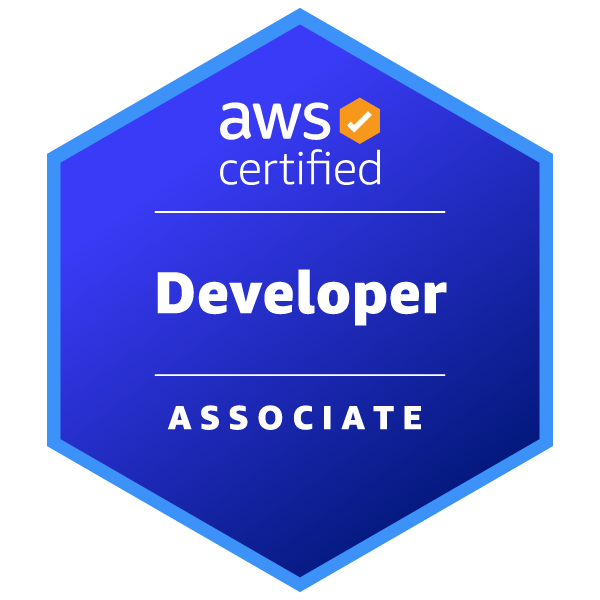

My expertise lies in working on web and mobile app development on the cloud. Being in Riyadh, Saudi Arabia, I am fluent in both Arabic and English. Digitization projects are my favorite.
King Hussein Medical Center
Amman, Jordan Mar 2025 – Jul 2025
The task I received was to write a mobile application that stores dermatology medical resources and notifies its users of events or lectures. The application was written in flutter and hosted on AWS. Events are created and announced using a simple email ticketing system.
Obeikan Digital Solutions
Riyadh, Saudi Arabia Jun 2023 – Sep 2023
Development and deployment of a Facial Recognition service using OpenCV's dlib. The goal was to allow a user to use facial recognition to sign in to work. This service was written using python's FastAPI and hosted on Google Cloud.
King Fahd University of Petroleum and Minerals
Dhahran, Saudi Arabia 2019-2024
Concentration in Computer Networks. Graduated with second honors and a GPA of 3.742/4

AWS Certified Developer – Associate
Earned: March 2025
Earners of this certification are able to develop, deploy, and debug cloud-based applications that follow AWS best practices.
I wrote a web scraper in Golang that transforms the Cisco Partner Locator website into a downloadable excel spreadsheet.
This is an exploratory research done under the supervision of Dr Waleed Al-Gobi at KFUPM. The goal of the project was to determine if software defined networks can be used to enhance the security of otherwise insecure systems. I utilize OpenFlow switches and a Ryu controller to centralize the management of the user credentials and permissions without any alterations to the Telnet clients.
This project uses an AI to create personalized restaurant orders and deals based on the user's order history and the restaurant's order data. The front-end is built with React and Tailwind. The back-end is written in Python and utilizes the ScikitLearn library for AI training.